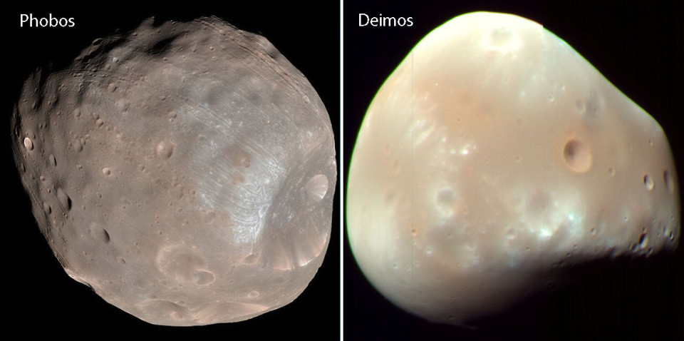

Înapoi acasă

Sistemul Solar se găseşte pe brațul Orion al galaxiei Calea Lactee, aflată în roiul de galaxii numit Grupul Local, parte din super-roiul de galaxii Fecioara.
Soarele
Soarele este cea mai apropiată stea de noi, adunând în jurul său câteva planete, sateliți naturali şi mulți asteroizi și comete. Toate obiectele cosmice din această regiune a spa țiului, fie că e vorba de un mic asteroid, fie de o planetă uriaşă, sunt atrase de forţa gravita țională a Soarelui, alcătuind ceea ce cunoaș tem sub denumirea ,,Sistemul Solar".
Întrucât este o stea, Soarele nu are o scoarţă tare, ca Pământul, materia sa găsindu-se în stare de plasmă sau de gaz. Energia Soarelui vine din nucleul său extrem de fierbinte (peste 15 milioane de grade!) şi de dens. Acolo, ato mii de hidrogen, principalul gaz din alcătui rea stelei, „ard" aşa cum arde un băt de chibrit şi formează atomi de heliu. Procesul se numeşte „,fuziune nucleară" și eliberează energie luminoasă, cea care face stelele să strălucească.
Aici puteți găsi mai multe informații despre toate tipurile de stele!
Mercur
Mercur este cea mai mică planetă din sistemul nostru solar și cea mai apropiată de Soare. Aflându-se lângă astrul care străluceşte, Mercur nu se vede pe cer decât dimineața sau seara, când Soarele coboară sub orizont.
Apropierea de Soare și implicit faptul că are cea mai mică orbită face din Mercur cea mai rapidă planetă a Sistemului Solar. Nu e de mirare că poartă numele mesagerului zeilor romani.
Fierul reprezintă două treimi din compoziția planetei Mercur, a cărei crustă nu este împărțită în plăci tectonice, ca a Pământului, ci este un monolit.
Căldura din apropierea Soarelui a evaporat în mare parte atmosfera pe care Mercur ar fi putut-o avea. Ce a rămas s-a risi în spaţiu, pentru că Mercur este mică şi nu are suficientă gravitație să o păstreze. În lipsa atmosferei care să funcționeze ca un scut protector, suprafața planetei este bombardată în continuu de meteoriți și de aceea este ciuruită de cratere ca Luna.
Caloris este cel mai mare crater al lui Mercur și a apărut în urma impactului cu un meteorit gigantic.
Venus
Venus este cea mai apropiată planetă de Pământ şi cea mai asemănătoare ca structură şi masă cu acesta, astfel încât este considerată sora sa. Are însă o particularitate: din pricina unui impact cu un asteroid sau o cometă, Venus se învârteşte în jurul axei sale în sens invers față de restul planetelor din Sistemul Solar. De aceea, văzut de pe Venus, Soarele răsare la vest și apune la est!
În trecut, când Soarele strălucea mai slab, Venus avea nori, râuri şi oceane. Pe măsură ce temperatura a crescut, o parte din apa oceanelor s-a încălzit şi s-a evaporat în atmosferă. Radiaţia ultravioletă a Soarelui, mai puternică acum, a descompus norii și a distrus moleculele de apă. Astfel, ploile s-au rărit, iar dioxidul de carbon aruncat în atmosferă de vulcani s-a acumulat în cantităţi uriaşe.
Nu ne punem problema să colonizăm planeta Venus. Dacă oamenii ar ajunge acolo, din pricina presiunii cu care ar apăsa atmosfera asupra plămânilor lor, nu ar putea respira nici dacă în atmosferă s-ar găsi oxigen.
În plus, din cauza compoziției atmosferei, ploile pe Venus conțin acid sulfuric, care ar arde costumele spațiale. Astronauții ar trebui să se ascundă și de uraganele dese, pentru că viteza lor depăşeşte 350 km/h, provocând zeci de fulgere într-o singură secundă.
Deoarece atmosfera este densă, Soarele nu se vede niciodată de pe suprafața planetei, astfel încât, la prânz ai avea senzația că este seară, fiindcă lumina abia străpunge prin stratul gros de gaze. Atmosfera densă arde toți meteoriții care cad pe suprafața planetei, de aceea pe sol nu sunt cratere. În schimb, sunt mii de vulcani uriași, având peste 100 de kilometri în diametru. Puțini dintre ei mai sunt activi.
Planeta Pământ - Terra
În Sistemul Solar, Pământul este cea mai mare dintre planetele stâncoase. El s-a for matodată cu celelalte planete. Pământul are două mișcări: una de rotație de la vest la est, în jurul axei proprii, și alta de revoluție în jurul Soarelui, pe care îl înconjoară ca o navă spațială.
Mişcarea de rotație durează 24 de ore și produce alternanţa zilelor și nopților. Pentru că Pământul este o sferă, în orice moment în jumătatea care este orientată către Soare va fi zi, iar în jumătatea opusă va fi noapte.
În mişcarea sa de revoluție (numită şi orbitală), Pământul dă ocol Soarelui într-un an, cu o viteză de peste 100 000 km/h. Aşa se explică alternanța anotimpurilor. În tot acest timp, planeta continuă să se rotească zilnic în jurul axei sale.
În urmă cu 4,5 miliarde de ani, Pământul a suferit un eveniment catastrofal: a fost lovit de un obiect cosmic de mari dimensiuni numit Theia. Impactul i-a rupt crusta şi a împrăştiat resturile în spațiu. Acestea au fost atrase la un loc de gravitaţia Pământului și au început să orbiteze în jurul său, formând Luna, satelitul nostru natural. De aceea Luna are o compoziție foarte asemănătoare cu a Terrei.
Aici puteți găsi mai multe informații despre Terra.
Marte
De pe Pământ, planeta Marte, ultima dintre planetele stâncoase, se vede roșiatică. Privind-o, romanii s-au gândit la sânge și i-au dat numele zeului războiului. Mai târziu, astronomii au văzut cu telescopul multe linii ce brăzdează suprafața planetei și și-au imaginat că sunt canale de irigație construite de marțieni. De fapt, sunt albii de râuri secate, iar culoarea roșiatică e dată de oxidarea (ruginirea) fierului din rocile de la suprafață la contactul cu oxigenul.
Când Marte era o planetă tânără, avea o atmosferă asemănătoare cu a Pământului: deasupra câmpiilor sale pluteau nori, iar apa ploilor umplea albiile râurilor. Unii oameni de știinţă cred că în râurile de pe Marte ar fi apărut la un moment dat forme incipiente de viaţă.
Există însă o diferență crucială între Marte și Pământ: câmpul magnetic al lui Marte este mult mai slab și nu protejează planeta de radiația cosmică. Acum 3 miliarde de ani, bombardamentul cu radiații cosmice (vântul solar) a distrus atmosfera planetei: norii au dispărut, ploaia a încetat, râurile au secat şi Marte a devenit o sferă pustie. Roverele care se plimbă azi pe suprafața planetei încearcă să găsească urme ale unor presupuse forme incipi ente de viață, dar până acum nu au găsit nimic.
Marte are doi mici sateliți naturali: Phobos, care se apropie din ce în ce mai mult de planetă, unde, în cele din urmă, se va prăbuși și Deimos, care se tot îndepărtează de Marte, până ce se va desprinde din slabul său câmp gravitational și va porni prin spațiu.
Spatiul dintre orbita lui Marte şi a lui Jupiter este, la prima vedere, vast și gol. Să ascundă el o planetă? După multe căutări, astronomii au descoperit acolo un obiect ceresc cu diametrul de 1000 de kilometri, care a fost denumit Ceres. Nu mică le-a fost mirarea când, pe lângă Ceres, au mai găsit sute de mii de planetoizi, obiecte cosmice reci, mici, cu un diametru de la câţiva metri la câţiva kilometri. În consecință, această regiune a spațiului a fost numită „centura de asteroizi" sau, mai precis, „centura principală de asteroizi", căci marginile ei trec şi dincolo de planetele de demarcație.
Jupiter
Jupiter este cea mai mare dintre planete şi poartă numele conducătorului zeilor romani. În Jupiter încap înghesuite 1 300 de planete Pământ, iar masa lui este de două ori mai mare decât masele tuturor celorlalte planete împreună. Aflat la distanța de 5 unităţi astronomice (aproximativ 778 de milioane de kilometri) de Soare, lui Jupiter îi ia 12 ani pământeşti să îl înconjoare.
Dimensiunea impresionantă a acestei planete este o consecință a gazului de hidrogen şi heliu din care este formată şi care o umflă ca pe un balon. Fiind o planetă gazoasă, nu are o suprafață solidă pe care să poată asoliza o navă spațială. În schimb, la zeci de mii de kilometri adâncime, hidrogenul devine dens şi vâscos, până când formează un ocean de hidrogen lichid. La o adâncime şi mai mare, hidrogenul lichid devine metalic, asemănându-se cu mercurul din termometrele noastre. La fund, oceanul este încălzit de nucleul solid al planetei. Aici, temperatura atinge 40 000 de grade Celsius, insuficientă pentru a iniția fuziunea nucleară a hidrogenului, altminteri am fi avut o a doua stea lângă noi.
Deşi este o planetă gigant, Jupiter se învârteşte foarte repede în jurul axei proprii, astfel că ziua durează doar 10 ore. Rotația turteşte planeta la poli şi dă naştere unor furtuni de 600 km/h care fac ca norii colorați de amoniac să se adune în nişte benzi orizontale închise la culoare care înconjoară planeta. Benzile se deplasează în sens opus pe suprafața planetei. Fiind atât de puternice, furtunile din atmo sferă provoacă uragane. ,,Marea Pată Roșie“ vizibilă pe Jupiter este de fapt ochiul unui uragan de trei ori mai mare decât pământul, care s-a stârnit acum mai bine de 300 de ani!
Jupiter are propriul minisistem planetar, format din aproape 80 de sateliți naturali. Cei mai cunoscuți sunt Io, Europa, Ganymede şi Callisto, numiți și ,,sateliți galileeni" pentru că au fost descoperiți de Galileo Galilei în 1609-1610, fapt care a demonstrat o dată în plus importanța telescopului. Io, cel mai mic dintre aceştia, este plin de vulcani activi şi învelit în sulf. Suprafața Europei este acoperită în întregime de un ocean adânc.Ganymede, cel mai mare dintre sateliți, e singura lună cu câmp magnetic. Callisto, cel mai îndepărtat satelit, e obiectul cosmic cel mai străpuns de cratere din întreg Sistemul Solar.
Saturn
Saturn, planeta înconjurată de inele, este al doilea gigant gazos ca mărime din Sistemul Solar şi poartă numele zeului roman al agriculturii. S-a format odată cu celelalte planete, acum 4,5 miliarde de ani, când gravitația a atras fuioare de gaze din spațiu pe care le-a adunat în cele din urmă într-un ghem. După 500 de milioane de ani, ghemul s-a aşezat pe orbita actuală. Cel care a descoperit planeta a fost Galileo Galilei, în 1610, însă din pricină că telescopul lui nu era performant, nu i-a văzut inelele.
Planeta este alcătuită aproape numai din gaze, mai ales hidrogen şi heliu, cu urme de metan și amoniac. Frigul cosmic îngheață cristalele de amoniac, care se văd câteodată sub forma unor pete albe deasupra atmosferei. La polul nord al planetei, atmosfera formează un foarte interesant desen hexagonal, dar cum apar aceste forme geometrice rămâne un mister.
Saturn este singura planetă din Sistemul Solar a cărei densitate este mai mică decât a apei. Asta înseamnă că, dacă undeva prin univers ar exista o piscină îndeajuns de mare încât să încapă în ea, Saturn ar pluti.
Saturn are şase inele concentrice, dintre care trei sunt mai vizibile. Ele sunt alcătuite din fragmente de gheață amestecată cu praf, unele mici de tot, altele mari cât o casă. Toate sunt sateliţi ai lui Saturn şi se mişcă sincron în jurul planetei. Lumina Soarelui se reflectă în gheață și face inelele să strălucească precum un giuvaier.
Pentru că este mare, Saturn are mulți sateliți naturali. Astăzi se cunosc peste 60, formați din roci şi gheață. Titan, cel mai mare dintre aceştia, întrece în dimensiune planeta Mercur. Este singurul satelit natural din Sistemul Solar care are atmosferă, alcătuită în principal din azot şi gaz metan. Pe Pământ, gazul metan este cel care aprinde flacăra aragazului, pe Titan, în schimb, fiind atât de frig, gazul metan se condensează sub forma unor picături care cad din nori ca ploaia. Ploile de metan formează râuri și oceane, dar n-ar fi indicat să înotăm în ele.
Uranus
Planeta Uranus nu era cunoscută în Antichitate. Ea a fost descoperită din greșeală în 1781 de astronomul englez William Herschel, care a confundat-o la început cu o cometă. Uranus este singura planetă al cărei nume provine din mitologia greacă, nu din cea romană.
Uranus este o planetă gazoasă, formată din hidrogen şi heliu, aflată atât de departe de Soare, încât îi ia 84 de ani pământeşti să-l înconjoare. Din pricina depărtării de Soare, Uranus este cea mai rece dintre planete, temperatura la suprafață ajungând și la -225 grade Celsius. Planeta a primit pe bună dreptate numele de gigant înghetat".
Planeta Uranus are inele negre, dar mai mici decât cele ale lui Saturn. Se crede că inelele ar fi din grafit, materialul din care sunt făcute minele de creion. Ipoteza cea mai credibilă este că acestea s-au format acum 600 de milioane de ani, la impactul cu un asteroid care ar fi înclinat axa planetei la 98 de grade.
Pentru că este mare, Uranus are 27 de sateliți naturali, mulți denumiți după personaje din piesele lui William Shakespeare. Cel mai mare este Titania, cu un diametru de 1578 km.
Neptun
Neptun este ultima planetă din Sistemul Solar. La scurtă vreme după descoperirea lui Uranus, astronomii care îi urmăreau evoluția au observat că mişcarea planetei este deviată. Ei au calculat că asupra lui Uranus acționează gravitația unei planete pe care n-o puteau vedea, dar care, fără nicio umbră de îndoială, se găsea ceva mai departe. Mai târziu, în 1846, folosind telescoapele, alți astronomi au găsit planeta Neptun exact în locul unde calculele matematice au dedus că se află.
Asemenea lui Uranus, Neptun este tot un gigant de gheață. Culoarea sa albastră este însă mai puternică, pentru că atmosfera planetei conține mult mai mult metan care reflectă culoarea albastră din lumină solară. Datorită acestei culori strălucitoare, Neptun a primit numele zeului roman al mărilor și oceanelor.
Neptun este cea mai vântoasă dintre planetele Sistemului Solar. Din când în când, uragane puternice îi mătură întreaga suprafață cu viteze de 2 000 hm/h, de cinci ori mai mari decât ale celor mai puternice uragane Pământ.
Planeta Neptun are 13 sateliţi naturali şi şase inele foarte înguste, care se văd cu greu cu telescoapele. Cel mai mare dintre sateliți este Triton, care își arată mereu aceeași față către Neptun. Satelitul are o scoarţă solidă. Erupțiile vulcanice şi gheizerele de pe suprafața lui Triton eliberează azot din adâncul său, care cade sub formă de zăpadă amestecată cu gheață de metan.
Centura Kuiper, această vastă regiune a Sistemului Solar unde se găsesc cele mai multe dintre planetele pitice(printre care se numără şi fosta planetă Pluto), seamănă foarte bine cu centura de asteroizi, însă este de douăzeci de ori mai lată şi cu mult mai groasă decât aceasta. Mai precis, dacă centura de asteroizi are forma unui disc, centura Kuiper arată mai curând ca un colac de salvare.